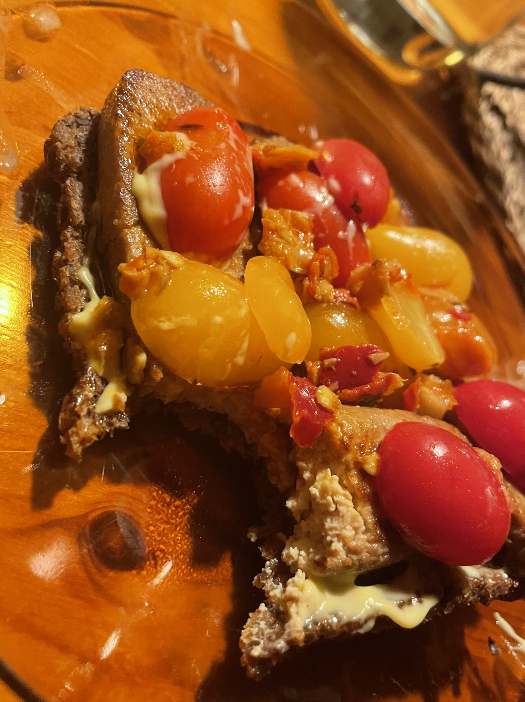

Pan negro con tofu, mayonesa, cherrys y bomba calabrese
Ingredients
2×
- 150 g de tofu
- aceite de oliva
- 2 rebanadas de pan negro
- mayonesa francesa
- 1 cdta de bomba calabrese
- 8 tomates cherry

Preparación
Paso 1
Cortar 150 g de tofu en lonchas y dorarlas en la sartén con un poco de aceite de oliva.
Paso 2
Tostar 2 rebanadas de pan negro y untarlas con mayonesa francesa.
Paso 3
Poner encima el tofu, 1 cdta de bomba calabrese y 8 tomates cherry cortados por la mitad.